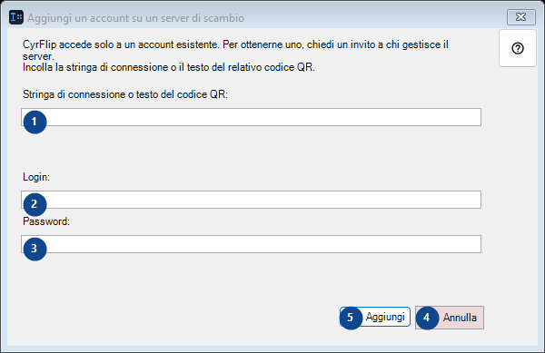
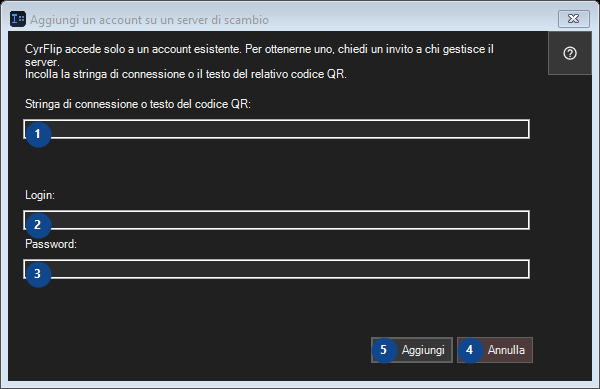

Aggiungi un account su un server di scambio
A cosa serve
Passa ciò che hai copiato agli altri tuoi dispositivi tramite un tuo server di scambio.


Ordine delle operazioni
Leggi le spiegazioni numerate, scegli i valori necessari e continua con il comando della finestra.
Elementi
1. CyrFlip accede solo a un account esistente. Per ottenerne uno, chiedi un invito a chi gestisce il server. Incolla la stringa di connessione o il testo del relativo codice QR.
Scegli o inserisci il valore indicato dall’etichetta vicina. Controllalo prima di continuare.
Le tue scorciatoie2. CyrFlip accede solo a un account esistente. Per ottenerne uno, chiedi un invito a chi gestisce il server. Incolla la stringa di connessione o il testo del relativo codice QR.
Scegli o inserisci il valore indicato dall’etichetta vicina. Controllalo prima di continuare.
Le tue scorciatoie3. CyrFlip accede solo a un account esistente. Per ottenerne uno, chiedi un invito a chi gestisce il server. Incolla la stringa di connessione o il testo del relativo codice QR.
Scegli o inserisci il valore indicato dall’etichetta vicina. Controllalo prima di continuare.
Le tue scorciatoie4. Annulla
Usa questo comando per l’azione indicata. Leggi ogni richiesta di conferma prima di accettare.
Le tue scorciatoie5. Aggiungi
Usa questo comando per l’azione indicata. Leggi ogni richiesta di conferma prima di accettare.
Le tue scorciatoie